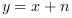
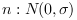

Simulation of channel with Additive White Gaussian Noise (AWGN)
y = awgn(x,sigma) // Real noise if x is real, complex otherwise y = awgn(x,sigma,'r') // Real noise y = awgn(x,sigma,'c') // Complex noise
input signal
square root of noise power
Compute , with . If x is a complex signal, or if complex noise is specifically specified, then noise (with same energy) is also added on the imaginary axis. So be carefull, with complex noise, the noise power is two times more than for real noise.